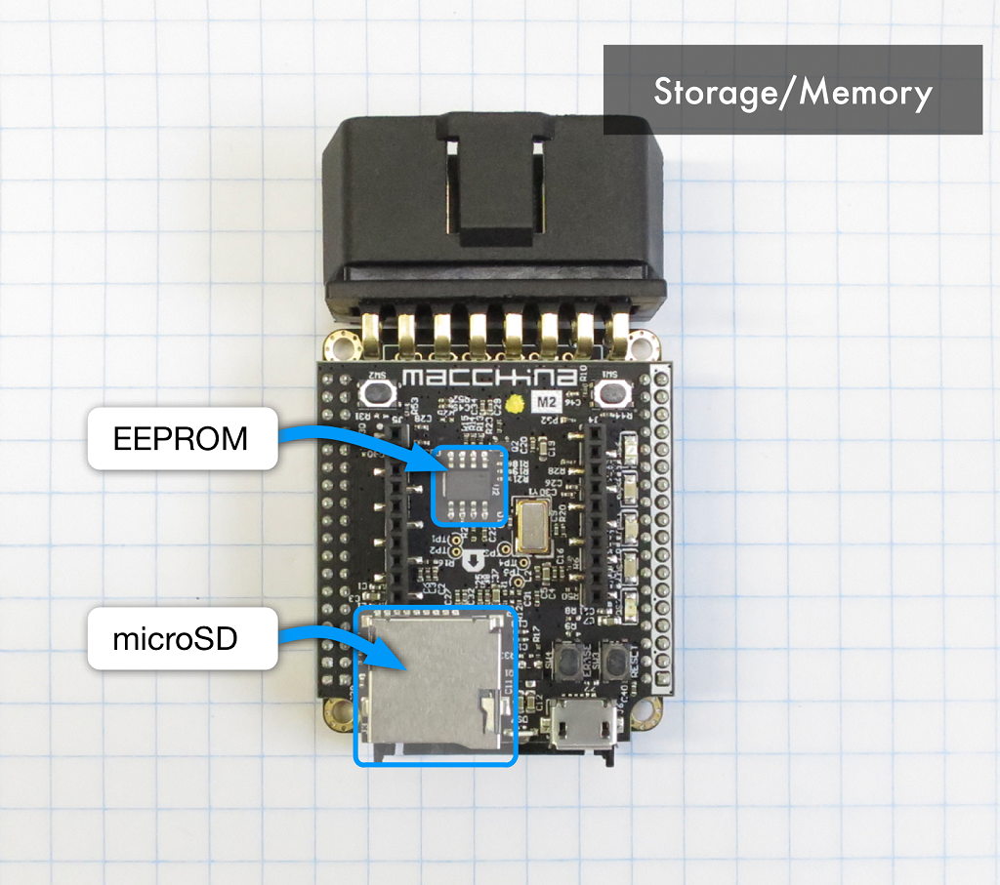

Storage
The Macchina M2 offers non-volatile memory or data storage via EEPROM and microSD card. Non-volatile means this data will not be erased when power is cut to M2.

EEPROM
The M2 contains electrically erasable programmable read-only memory (EEPROM) for non-volatile memory. The EEPROM is 32Kbits and controlled via I2C @ address 0x50 Hex.

Here is the link to the datasheet: http://ww1.microchip.com/downloads/en/DeviceDoc/21713M.pdf
microSD
The M2 contains a microSD socket. Unlike most Arduino implementations of SD, we chose to employ the HSMCI (High Speed MultiMedia Card Interface) as the connection method. The result being both faster reading and writing, and freeing up the SPI interface for other fun stuff. If for some reason, SPI is needed, we did include some 0 ohm jumpers on the PCB to allow for SPI connection. These are left open by default.

For in-depth explanation of how the HSMCI works, refer to the SAM3X datasheet, starting on page 909.
Using the SD card slot on your M2 is pretty straight-forward since the complexities are abstracted through a library which was automatically installed for you when you setup your Arduino IDE for the Macchina M2. A description of the examples included with the library can be found here.